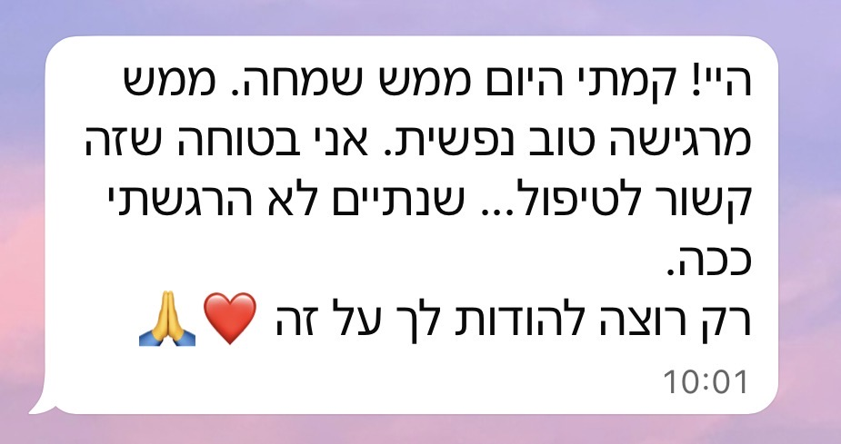
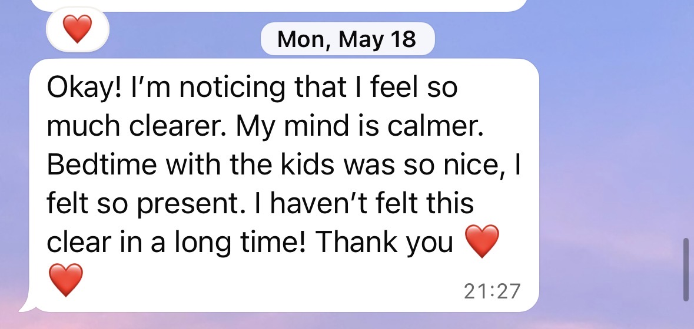
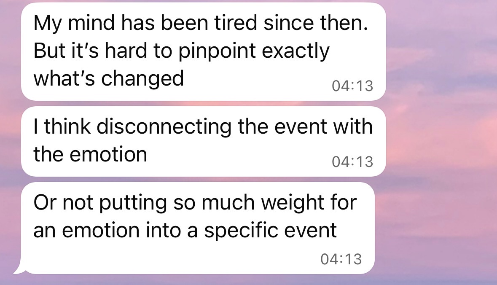
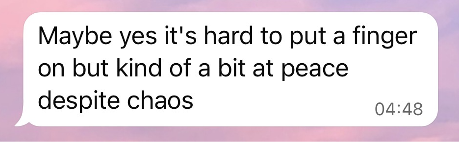
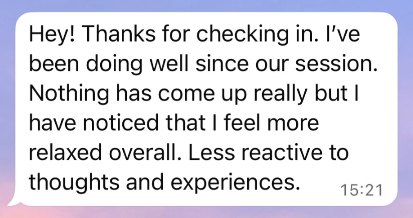

Don’t take it from me.
Choosing someone to support you is personal. It means making space for yourself, and trusting someone with the things that matter to you.
I can share how I work, but there’s something different about hearing from people who have experienced it for themselves.
Here are their reflections, in their own words. Take your time, read their stories, and see what resonates with you.
Read their stories
Real experiences
From people I’ve worked with
One-on-one sessions
Everyone’s process is different, but many people notice meaningful changes in how they feel, react, and relate to the issue they came in with.
"באתי לעבוד עם דניאל כי חיפשתי שיטה שמתמקדת באופן ספציפי בטיפול בטראומות מבלי שאצטרך שוב לדבר על הכל מההתחלה. הרגשתי מאוסה מטיפולים פסיכולוגים שאני צריכה בכל פעם לספר את סיפור חיי להזכר בהכל ובסוף להרגיש מרוקנת ועצובה.
עם דניאל זה הפוך, עשיתי אצלה כבר 3 מפגשים ובכל פעם אני מרגישה שאני יוצאת עם אנרגיות וכוחות מהמפגש. אף על פי שהסשן עצמו מאוד מורכב ונוגע בנקודות רגישות ועמוקות בחיי.
אני מרגישה שהטיפול עזר לי להתחבר לאינטואיציה של הגרון שלי. למדתי כשכואב לי הגרון זה כי אני לא אומרת משהו ולאחר תשאול עם עצמי ברגע שאני מבטאת אותו מול הבן זוג או מול הטיפול עם דניאל אני מרגישה הקלה.
מה שמיוחד בIEMT זה שהתנועות עיניים עוקפות אצלי את המנגנוני הגנה של המיינד, הוא גורם לי להרגיש יותר בעוצמות, להתחבר לכאב, לאינטואיציה ולהזכר בדברים מהעבר ולהסתכל עליהם מפרספקטיבה חדשה של הכלה ומודעות.
הדבר הכי חזק בטיפול זה שאני לומדת להרגיש, עם כאב, עם אותנטיות, אני מצליחה לנטרל לאט לאט את המנגונני הגנה שליווי אותי לאורך כל הילדות. אני מרגישה אצל דניאל בטיפול הכרה והכלה מצידה בכאב ובכל מה שעולה לי בטיפול. הנוכחות שלה חלק מהותי מהתהליך. היא בחורה מקסימה ונעימה והאנרגיה שלה מדהימה ורגישה.
אני עוד בתהליך ויש לי מסע לעבור אבל ללא ספק אני מתכננת להמשיך עם דניאל לאורך תקופה."
One-on-one sessions“I came to work with Danielle because I was looking for a method that specifically focuses on healing trauma without having to talk about everything all over again. I was tired of psychological therapy, where every time I had to tell my life story, remember everything, and ultimately leave feeling drained and sad.
With Danielle, it’s the opposite. I’ve already had three sessions with her, and every time I leave feeling energized and empowered, even though the sessions themselves are very intense and touch on sensitive and deep parts of my life.
I feel that the therapy has helped me connect with the intuition of my throat. I’ve learned that when my throat hurts, it’s because there’s something I’m not expressing. After exploring this within myself, the moment I express it to my partner or during a session with Danielle, I feel relief.
What’s special about IEMT is that the eye movements bypass my mind’s defense mechanisms. They allow me to feel things more intensely, connect with my pain and intuition, remember things from my past, and look at them from a new perspective of acceptance and awareness.
The most powerful part of this therapy is that I’m learning how to truly feel, to be with my pain, and to be authentic. Little by little, I’m able to dismantle the defense mechanisms that have accompanied me throughout my childhood.
During my sessions with Danielle, I feel that my pain and everything that comes up is acknowledged, accepted, and held with compassion. Her presence is an essential part of the process. She is such a lovely, warm person, and her energy is incredible, gentle, and sensitive.
I’m still in the process, and I know I have a journey ahead of me, but I definitely plan to continue working with Danielle for a long time.”
"After just one session, I felt such a noticeable shift. Danielle helped me get to the core of where that feeling came from and how deeply that belief had been living inside of me. Immediately afterward, I felt such a deep sense of peace and calm, and that shift continued to show up in the days after."
One-on-one sessions
"A recent breakup was causing me a lot of anxiety and nervous system dysregulation. A friend recommended Danielle as a mentor and guide to support me through my healing journey. After only two sessions, I've noticed I feel more in tune with myself. My emotions feel less overwhelming, and I'm not as easily controlled by them. It's been a grounding and supportive experience so far, and I'm looking forward to continuing."
One-on-one sessions
"This work is helping me develop more compassion for myself and understand why I am the way I am. I'm beginning to recognize that the patterns I developed were not my fault."
One-on-one sessions
In their own voices
Moshe | From Triggered to Calm
“The process was very soothing. It felt like I was receiving a brain massage from the inside and a workout for my eyes, and I felt the effects within seconds, if not immediately.”
One-on-one sessions
Basia | From Procrastination to Taking Action
“When the session ended, I felt all my fears went away and I'm able to start new projects and I start doing the things I wanted for my business.”
One-on-one sessions
Julia | Clear and Grounded
“I'm less attached to the emotion itself. I'm more like, this is going to pass. I'm a little bit less upset at my emotions, and it's been interesting.”
One-on-one sessions
Ash | Finding the Confidence to Follow Her Dreams
“I met Danielle at this pivotal moment in my life as I'm starting to embark on my dreams and leading my second yoga retreat.”
One-on-one sessions
Inbal | גילתה בתוכה מקום שלא ידעה שקיים
״עד שלא תעשו את זה בעצמכם, אתם לא תבינו במה מדובר.״
One-on-one sessions
Silke | Deep Transformation After One Session
“But after the session now, I can tell that this is deep transformational work. And I am mind-blown, and still so touched by your presence and how you held the space.”
One-on-one sessions
Ella | שחרור רגשי ותחושת הקלה
״תחושה יותר קלילה, תחושה יותר נינוחה, דברים גם מתחילים קצת לזרום אחרת בחיים״
One-on-one sessions
Lihi | Memories Becoming Less Overwhelming
“I felt like something calmed down and it was much less overwhelming for me to have a lot of topics in my life that are overflowing at the same time.”
One-on-one sessions
Client messages
Words shared along the way





One-on-one sessions
Inner Source
“The biggest takeaway for me has been feeling more settled into myself and getting back to who I feel like I am.
There are still things in my life that aren’t going perfectly. The challenges haven’t necessarily changed, but I feel much better equipped to deal with them. I feel calmer in how I approach things, and I have more confidence that I can do things in my own way instead of approaching life based on how I think I’m supposed to.
I feel like I’m approaching the challenges in my life from a much more confident place because of the work we’ve done.”
Inner Source
“When I first joined, I was so sad. I didn’t know how I was going to handle this new reality. It felt like the world was crashing.
Through this program, I’ve built new tools to regulate myself when things get hard, because that’s life. I have so much more self-trust and self-confidence. I’m learning to trust my body and my mind, connect with myself, give myself grace, and actually show up for myself.
I feel lighter and more creative, and I’m feeling more confident in myself. I feel like I’m remembering who I am and getting closer to the person I want to step into.”
Inner Source
The Abundance Container
Reflections from our group work on abundance and our relationship with money.
Deeper transformation
Katy
“It's kind of like feeling the trust deeper within myself of putting out and launching a program and knowing that, you know, I do have, I am abundance, and I have the ability to magnetize and call in those ideal clients and the ideal students into my world.”
The Abundance Container
Freedom around money
Maureen
“And interestingly, at the same time, money started coming into my life from completely different and unexpected directions. And personally, I do believe that this is connected to the shift that happened within me.”
The Abundance Container
“A deeper understanding of myself”
Before working with Danielle, I wasn’t fully aware of some of the deeper patterns and beliefs shaping my relationship with money. I knew that money was an area of my life where I wanted to experience more ease, trust, and abundance, but I hadn’t fully understood how deeply my past experiences were influencing this relationship.
Through working with Danielle, I became more aware of the connection between my childhood experiences, unresolved traumas, and the way I relate to money today. This work opened up a deeper understanding of myself and gave me the opportunity to explore patterns that I hadn’t previously been fully conscious of.
I believe this work is truly powerful because it goes beyond money itself and invites us to look at the deeper emotional roots of our relationship with abundance. I feel genuinely grateful to have been part of this experience and to have had the opportunity to bring more awareness to this important area of my life.
Thank you, Danielle, for creating the space for this work and for sharing it with others.
The Abundance Container
💚
“Amazing, powerful and profound.”
Before working with Danielle, I was very curious about Eye Movement Therapy, as I had never experienced this kind of work before.
After working with Danielle, I gained much more awareness of my subconscious beliefs, stories, and patterns. I had some really powerful insights and was able to connect with and meet my inner child on a deeper level.
I think this work is amazing, powerful, and profound. It can help us connect with the deeper stories and beliefs that are subconsciously influencing our lives and decisions.
No matter where someone is on their journey of awareness and inner healing, I believe this work can help them connect with themselves in a new way.
The Abundance Container
“Feeling Safe to Go Deeper”
I participated in the Abundance Healing Container with Danielle, and it helped me look at my trauma in a deeper way and revisit some difficult experiences with care and support. I felt lighter after each session, and I’m really grateful for the experience.
Danielle is warm, caring, and compassionate. I felt safe with her, and she always gave me the space to go at my own pace while supporting me through the more vulnerable moments.
Because of my experience with Danielle, I’d love to explore this modality further. I’m very grateful for the kindness and sensitivity she brought to our sessions.
The Abundance Container
Testimonials reflect individual experiences. Results and the number of sessions needed vary from person to person.
Let’s talk
Let’s see if working together feels right.
Book a free 30-min discovery call to ask your questions and share what’s bringing you here.
Book a free 30-min discovery call